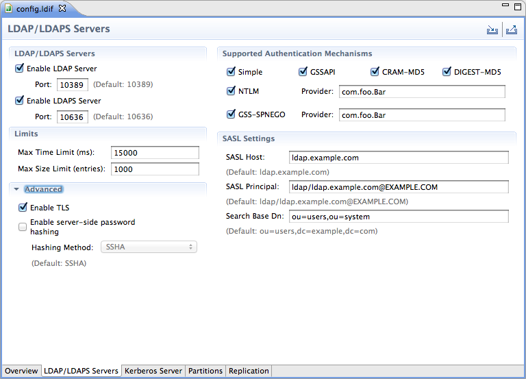

ApacheDS 2.0
Downloads
Documentation
- Basic User Guide
- Advanced User Guide
- Developer Guide
- Kerberos User Guide
- Configuration
- JavaDocs
- Cross-Reference
Support
Community
About Apache
Introduction
ADS 2.0 configuration has been completely reworked since 1.0 and 1.5 versions. While those two versions were XML based, we decided to store the new configuration in the DiT (Directory Information Tree).
It’s now available either through an LDAP browser, programatically using an LDAP API or simply by editing the LDIF files stored on the disk.
Configuration structure
ADS is more than a LDAP server. It’s also a Kerberos server, a DNS Server and a DHCP server. In other words, we have to define a configuration for many servers, some of them being backed by a Directory Service.
We can consider that the main service is the Directory Service, on top of which we have servers. Each server has a specific network configuration. We will expose the associated configuration.
Using Apache DirectoryStudio to manage the configuration
The easiest way to manage a server configuration is to use Studio for that. Defining a new server will allow you to configure it, but you can also modify an existing server’s configuration, as soon as you can connect on to this server. Let’s see how we process in both cases.
New server configuration
You can define a brand new server configuration using Studio. All you have to do is :
- to create a new Server instance
- modify it’s configuration
- save the configuration as a file (ldif)
- move this ldif file in the installed server workspace at the right place (under the configuration partition)
Creation of a new server
Click on the ‘New Server’ icon :
This will popup this window :
Select the type of server you want to configure (here, 2.0) and name your server.
Configuration overview
By double-clicking on the created server, you will see an overview of the current configuration (all the value are default values at this point) :
You can modify the server port here, and access to the advanced configurations from this screen.
LDAP/LDAPS configuration
The LDAP/LDAPS tab let you configure all the SASL and TLS configuration, plus the server limits :

We manage two kind of limits :
- The maximum time the server will take to process a request (when this time has been expired, the request will be stopped)
- The maximum number of entries we will return
Kerberos configuration
In this tab, you can setup all the parameters needed to configure your Kerberos server :
Partition configuration
This is where you add new partitions and modify them.
There are a few importants elements to configure for a partition :
- its ID, which is an external name
- its Suffix, which must be a valid DN
- the cache size used for this partition (it’s the number of page that will be kept in memory, considering that a page may contain more than one entry)
Then you also have to configure the index used by this partition. Some of them are mandatory (apacheRdn, apacheSubLevel, apachePresence, apacheOneLevel, apacheOneAlias, apacheSubAlias, apacheAlias, objectClass, entryUuid, entryCsn), you can just modify their cache, all the others are user index, you have to create them. Each index is associated with an existing AttributeType.

Replication
Not yet available
Modifying an existing server configuration
The server should accept live modification. If this is the case, you just have to connect on the server and to modify it.
DiT configuration structure
We need to define a directory tree to store the configuration.
Here is the existing structure, where we have defined one LDAP server (ldapServer1), backed by one Directory Service (DS1), and two associated transports (ldapSrv1 and ldapsSrv1) :
ou=config
|
+--ads-directoryServiceId=default
|
+--ads-changeLogId=defaultChangeLog
|
+--ads-journalId=defaultJournal
|
+--ou=interceptors
| |
| +--ads-interceptorId=aciAuthorizationInterceptor
| |
| +--ads-interceptorId=authenticationInterceptor
| | |
| | +--ou=authenticators
| | | |
| | | +--ads-authenticatorid=anonymousauthenticator
| | | |
| | | +--ads-authenticatorid=simpleauthenticator
| | | |
| | | +--ads-authenticatorid=strongauthenticator
| | |
| | +--ou=passwordPolicies
| | |
| | +--ads-pwdId=default
| |
| +--ads-interceptorId=collectiveAttributeInterceptor
| |
| +--ads-interceptorId=defaultAuthorizationInterceptor
| |
| +--ads-interceptorId=eventInterceptor
| |
| +--ads-interceptorId=exceptionInterceptor
| |
| +--ads-interceptorId=keyDerivationInterceptor
| |
| +--ads-interceptorId=normalizationInterceptor
| |
| +--ads-interceptorId=operationalAttributeInterceptor
| |
| +--ads-interceptorId=passwordHashingInterceptor
| |
| +--ads-interceptorId=referralInterceptor
| |
| +--ads-interceptorId=schemaInterceptor
| |
| +--ads-interceptorId=subentryInterceptor
| |
| +--ads-interceptorId=triggerInterceptor
|
+--ou=partitions
| |
| +--ads-partitionId=system
| | |
| | +--ou=indexes
| | |
| | +--ads-indexAttributeId=apacheRdn
| | |
| | +--ads-indexAttributeId=apacheSubLevel
| | |
| | +--ads-indexAttributeId=apachePresence
| | |
| | +--ads-indexAttributeId=apacheOneLevel
| | |
| | +--ads-indexAttributeId=apacheOneAlias
| | |
| | +--ads-indexAttributeId=apacheSubAlias
| | |
| | +--ads-indexAttributeId=apacheAlias
| | |
| | +--ads-indexAttributeId=objectClass
| | |
| | +--ads-indexAttributeId=entryUUID
| | |
| | +--ads-indexAttributeId=entryCSN
| | |
| | +--ads-indexAttributeId=ou
| | |
| | +--ads-indexAttributeId=uid
| |
| +--ads-partitionId=example
| |
| +--ou=indexes
| |
| +--ads-indexAttributeId=apacheRdn
| |
| +--ads-indexAttributeId=apacheSubLevel
| |
| +--ads-indexAttributeId=apachePresence
| |
| +--ads-indexAttributeId=apacheOneLevel
| |
| +--ads-indexAttributeId=apacheOneAlias
| |
| +--ads-indexAttributeId=apacheSubAlias
| |
| +--ads-indexAttributeId=apacheAlias
| |
| +--ads-indexAttributeId=objectClass
| |
| +--ads-indexAttributeId=entryUUID
| |
| +--ads-indexAttributeId=entryCSN
| |
| +--ads-indexAttributeId=ou
| |
| +--ads-indexAttributeId=uid
| |
| +--ads-indexAttributeId=dc
| |
| +--ads-indexAttributeId=krb5PrincipalName
|
+--ou=servers
|
+--ads-serverId=changePasswordServer
| |
| +--ou=transports
| |
| +--ads-transportId=tcp
| |
| +--ads-transportId=udp
|
+--ads-serverId=dnsServer
| |
| +--ou=transports
| |
| +--ads-transportId=tcp
| |
| +--ads-transportId=udp
|
+--ads-serverId=httpServer
| |
| +--ou=transports
| | |
| | +--ads-transportid=http
| | |
| | +--ads-transportid=https
| |
| +--ou=httpWebApps
| |
| +--ads-id=testapp
|
+--ads-serverId=kerberosServer
| |
| +--ou=transports
| |
| +--ads-transportid=tcp
| |
| +--ads-transportid=udp
|
+--ads-serverId=ldapServer
| |
| +--ou=replConsumers
| |
| +--ou=transports
| | |
| | +--ads-transportid=ldap
| | |
| | +--ads-transportid=ldaps
| |
| +--ou=extendedOpHandlers
| | |
| | +--ads-extendedOpId=gracefulShutdownHandler
| | |
| | +--ads-extendedOpId=starttlshandler
| | |
| | +--ads-extendedOpId=storedprochandler
| |
| +--ou=saslMechHandlers
| |
| +--ads-saslMechName=CRAM-MD5
| |
| +--ads-saslMechName=DIGEST-MD5
| |
| +--ads-saslMechName=GSS-SPNEGO
| |
| +--ads-saslMechName=GSSAPI
| |
| +--ads-saslMechName=NTLM
| |
| +--ads-saslMechName=SIMPLE
|
+--ads-serverId=ntpServer
|
+--ou=transports
|
+--ads-transportId=tcp
|
+--ads-transportId=udp
Directory Service
For every server backed by a directory, this is the place we define this service’s configuration.
The Directory Service configuration itself depends on some sub-elements, which needs their own configuration :
- changeLog
- interceptors
- journal
- partitions
- replication
see configuration schema description
Otherwise, we also have a set of simple parameters, listed in the following table :
ads-directoryService ObjectClass
We have many parameters we can configure in order to get the DirectoryService functioning. Some parameters are mandatory, other aren’t. Some may have one single value, others may not.
Here is the list of mandatory and optional parameters
Mandatory parameters
| Name | OID | Mandatory | type | SV/MV | Composite | Description |
|---|---|---|---|---|---|---|
| ads-directoryServiceId | 1.3.6.1.4.1.18060.0.4.1.2.100 | Yes | PrintableString | SV | No | The unique identifier for this DirectoryService |
| ads-dsReplicaId | 1.3.6.1.4.1.18060.0.4.1.2.112 | Yes | PrintableString | SV | No | The numeric ID (between 000 and 999) for this instance |
| ads-interceptors | 1.3.6.1.4.1.18060.0.4.1.2.116 | Yes | PrintableString | MV | Yes | The list of interceptors |
| ads-partitions | 1.3.6.1.4.1.18060.0.4.1.2.108 | Yes | PrintableString | MV | Yes | The list of partitions |
Optional parameters
| Name | OID | Mandatory | type | SV/MV | Composite | Description |
|---|---|---|---|---|---|---|
| ads-servers | 1.3.6.1.4.1.18060.0.4.1.2.115 | No | PrintableString | SV | Yes | The servers we have to start |
| ads-dsAccessControlEnabled | 1.3.6.1.4.1.18060.0.4.1.2.101 | No | Boolean | SV | No | Is the access control enabled or not (default to no) |
| ads-dsAllowAnonymousAccess | 1.3.6.1.4.1.18060.0.4.1.2.102 | No | Boolean | SV | No | If one can connect with the anonymous account (default to no) |
| ads-changeLog | 1.3.6.1.4.1.18060.0.4.1.2.105 | No | PrintableString | SV | Yes | The ChangeLog configuration |
| ads-dsDenormalizeOpAttrsEnabled | 1.3.6.1.4.1.18060.0.4.1.2.103 | No | Boolean | SV | No | A flag telling the server to return a denormalized version of operational attributes |
| ads-journal | 1.3.6.1.4.1.18060.0.4.1.2.117 | No | PrintableString | SV | Yes | The Journal configuration |
| ads-dsMaxPDUSize | 1.3.6.1.4.1.18060.0.4.1.2.110 | No | Integer | SV | No | The max size for an incoming PDU |
| ads-dsPasswordHidden | 1.3.6.1.4.1.18060.0.4.1.2.104 | No | Boolean | SV | No | Tells if the password is hidden |
| ads-dsSyncPeriodMillis | 1.3.6.1.4.1.18060.0.4.1.2.111 | No | Integer | SV | No | Duration between two flush on disk |
| ads-dsTestEntries | 1.3.6.1.4.1.18060.0.4.1.2.113 | No | PrintableString | MV | No | The set of entries to inject at startup (may be obsolete) |
Interceptors
Some interceptors can be configured (Authentication and PassowordPolicy). They will be described with a specific ObjectClass.
Otherwise, they only have an identifier, and an order number, as the interceptors are used in an ordered chain. (we may want later to allow an administrator to inject a new interceptor)
This ObjectClass contains the informations relative to a base interceptor. It will be extended by each interceptor specific interceptor.
Mandatory parameters
| Name | OID | Mandatory | type | SV/MV | Composite | Description |
|---|---|---|---|---|---|---|
| ads-interceptorId | 1.3.6.1.4.1.18060.0.4.1.2.130 | Yes | PrintableString | SV | No | The Interceptor identifier |
| ads-interceptorOrder | 1.3.6.1.4.1.18060.0.4.1.2.131 | Yes | Integer | SV | No | The Interceptor order number |
| ads-interceptorClassName | 1.3.6.1.4.1.18060.0.4.1.2.804 | Yes | PrintableString | SV | No | Fully qualified class name of the interceptor |
Authentication interceptor
ads-authenticationInterceptor
| Name | OID | Mandatory | type | SV/MV | Composite | Description |
|---|---|---|---|---|---|---|
| ads-authenticators | 1.3.6.1.4.1.18060.0.4.1.2.933 | No | N/A | MV | Yes | A reference to the authenticators |
| ads-passwordPolicies | 1.3.6.1.4.1.18060.0.4.1.2.313 | No | PrintableString | MV | Yes | The PasswordPolicy configurations |
ChangeLog
Here is the configuration :
| Parameter | Default value | Description |
|---|---|---|
| changeLogStore | A store for change events on the directory (not described atm) | |
| enabled | true | Tells if the changeLog system is up and running |
| exposed | false | Tells if the changeLog system is visible by the clients |
| partitionSuffix | ou=changelog | The prefix of the partition |
| revisionsContainerName | ou=revisions | The name of the revisions container under the partition |
| tagsContainerName | ou=tags | The name of the tags container under the partition |
{note} The partitionSuffix, revisionsContainerName and tagsContainerName should not be exposed. They won’t be associated with a schema element. The changeLogStore is not defined right now, as we only have a InMemory changeLog system working. {note}
ChangeLog schema
AttributeTypes
Here is the list of AttributeTypes we need for the changeLog :
| AttributeType | ADS | OID | Description |
|---|---|---|---|
| [ads-changeLogEnabled](configuration-schema#ads-changelogenabled.html) | yes | 1.3.6.1.4.1.18060.0.4.1.2.xxx | |
| [ads-changeLogExposed](configuration-schema#ads-changelogexposed.html) | yes | 1.3.6.1.4.1.18060.0.4.1.2.xxx |
ObjectClass
Here is the ObjectClass we need for the changeLog :
| ObjectClass | type | ADS | OID | Description |
|---|---|---|---|---|
| [ads-changeLog](configuration-schema#ads-changelog.html) | STRUCTURAL | yes | 1.3.6.1.4.1.18060.0.4.1.3.xxx | The ChangeLog ObjectClass |
Journal
This is the system storing every modifications in order to be able to restore the server if it crashes, or to manage replication. It is backed by a store, which needs to be configured too. Here is the configuration :
| Parameter | Default value | Description |
|---|---|---|
| enabled | true | Tells if the journal system is up and running |
| rotation | 0 | The size before a journal rotation occurs |
| filename | journal.ldif | The journal's file name |
| workingDirectory | the DirectoryService working directory | The place on disk where the journal is stored |
Journal schema
AttributeTypes
Here is the list of AttributeTypes we need for the journal :
| AttributeType | ADS | OID | Description |
|---|---|---|---|
| [ads-journalFileName](configuration-schema#ads-journalfilename.html) | yes | 1.3.6.1.4.1.18060.0.4.1.2.xxx | The journal's file name |
| [ads-journalWorkingDirectory](configuration-schema#ads-journalworkingdirectory.html) | yes | 1.3.6.1.4.1.18060.0.4.1.2.xxx | The place on disk where the journal is stored |
| [ads-journalRotation](configuration-schema#ads-journalrotation.html) | yes | 1.3.6.1.4.1.18060.0.4.1.2.xxx | The size before a journal rotation occurs |
| [ads-journalEnabled](configuration-schema#ads-journalenabled.html) | yes | 1.3.6.1.4.1.18060.0.4.1.2.xxx | Tells if the journal system is up and running |
ObjectClass
Here is the ObjectClass we need for the journal :
| ObjectClass | type | ADS | OID | Description |
|---|---|---|---|---|
| [ads-journal](configuration-schema#ads-journal.html) | STRUCTURAL | yes | 1.3.6.1.4.1.18060.0.4.1.3.xxx | The Journal ObjectClass |
Partition
The Partition parameters are listed in the following table :
| Parameter | Default value | Description |
|---|---|---|
| cacheSize | 100 | Number of cached entries |
| id | N/A | The partition id |
| indexedAttributes | N/A | The list of indexed attributes |
| optimizerEnabled | true | Tells if the optimizer is enabled or not |
| property | N/A | ??? |
| suffix | N/A | The partition's suffix |
| syncOnWrite | true | Tells the server to flush on disk for every write |
the indexedAttributes parameter itself is a composite attribute, and will be described below.
{note} The ‘property’ parameter will probably be removed. {note}
{note} The ‘optimizerEnabled’ parameter will probably be removed. {note}
Partition schema
AttributeTypes
| Parameter | Default value | Description |
|---|---|---|
| ads-partitionCacheSize | 100 | Number of cached entries |
| ads-partitionId | N/A | The partition Id |
| ads-partitionIndexedAttributes | N/A | The list of indexed attributes |
| ads-partitionOptimizerEnabled | true | Tells if the optimizer is enabled or not. probably a useless parameter |
| ads-partitionProperty | N/A | Will be removed |
| ads-partitionSuffix | N/A | The partition suffix |
| ads-partitionSyncOnWrite | true | Tells the server to flush on disk for every write |
ObjectClass
| ObjectClass | type | ADS | OID | Description |
|---|---|---|---|---|
| ads-partition | STRUCTURAL | yes | 1.3.6.1.4.1.18060.0.4.1.3.xxx | The Partition ObjectClass |
Index
The Index parameters are listed in the following table :
| Parameter | Default value | Description |
|---|---|---|
| attributeId | N/A | The attributeType name or OID |
| cacheSize | 100 | Number of key we cache |
| numDupLimit | 512 | The number of duplicated element we allow before switching to a secondary tree |
| filename | the attributeName | Name of the index file |
| workingDirectory | The DS's working directory | The place on disk where the index will be stored |
{note} The cacheSize is likely to be removed. {note}
Index schema
AttributeTypes
| Parameter | Default value | Description |
|---|---|---|
| [ads-indexAttributeId](configuration-schema#ads-indexattributeid.html) | N/A | The attributeType name or OID |
| [ads-indexCacheSize](configuration-schema#ads-indexcachesize.html) | 100 | Number of key we cache |
| [ads-indexNumDupLimit](configuration-schema#ads-indexnumduplimit.html) | 512 | The number of duplicated element we allow before switching to a secondary tree |
| [ads-indexFilename](configuration-schema#ads-indexfilename.html) | the attributeName | Name of the index file |
| [ads-indexWorkingDirectory](configuration-schema#ads-indexworkingdirectory.html) | The DS's working directory | The place on disk where the index will be stored |
ObjectClass
We will define at least two ObjectClasses, as we may have different kind of index (JDBM, Oracle, …)
| ObjectClass | type | ADS | OID | Description |
|---|---|---|---|---|
| [ads-index](configuration-schema#ads-index.html) | ABSTRACT | yes | 1.3.6.1.4.1.18060.0.4.1.3.xxx | A global indexed attribute (can be JDBM or anything else) |
| [ads-jdbmIndex](configuration-schema#ads-jdbmindex.html) | STRUCTURAL | yes | 1.3.6.1.4.1.18060.0.4.1.3.xxx | A JDBM indexed attribute |
LdapServer
The LdapServer parameters are described in the following table :
| Parameter | Default value | Description |
|---|---|---|
| id | N/A | The LdapServer identifier |
| transports | N/A | The LdapServer transports |
| confidentialityRequired | false | Tells the server to accept requests using startTLS or LDAPS |
| allowAnonymousAccess | true | Tells the server to accept Anynymous requests or not |
| maxSizeLimit | 1000 | The maximum number of entries to return |
| MaxTimeLimit | 1000 | The maximul time before an operation is aborted (in seconds) |
| extendedOperationHandlers | ??? | |
| saslHost | N/A | The name of this host, validated during SASL negotiation |
| saslPrincipal | ldap/ldap.example.com@EXAMPLE.COM | The service principal, used by GSSAPI |
| saslQop | "auth, "auth-int", "auth-conf" | The quality of protection (QoP), used by DIGEST-MD5 and GSSAPI |
| saslRealms | N/A | The realms serviced by this SASL host |
| saslMechanismHandlers | N/A | |
| directoryService | N/A | The reference to the associated DirectoryService |
| keystoreFile | The JVM keystore | The keystore file to use to store certificates |
| certificatePassword | N/A | The certificate passord |
| replicationSystem | ??? Should be associated to the DirectoryService |
Some of the parameters will not be used : extendedOperationHandlers, saslQop, saslMechanismHandlers and replicationSystem.
None of those parameters are composite, except the DirectoryService, which has already been described.
LdapServer schema
AttributeTypes
| AttributeType | ADS | OID | Description |
|---|---|---|---|
| [ads-ldapServerId](configuration-schema#ads-ldapserverid.html) | yes | 1.3.6.1.4.1.18060.0.4.1.2.xxx | The LdapServer identifier |
| [ads-ldapServerId](configuration-schema#ads-ldapserverid.html) | yes | 1.3.6.1.4.1.18060.0.4.1.2.xxx | The LdapServer transports |
| [ads-ldapServerTransports](configuration-schema#ads-ldapservertransports.html) | yes | 1.3.6.1.4.1.18060.0.4.1.2.xxx | Tells the server to accept requests using startTLS or LDAPS |
| [ads-ldapServerAllowAnonymousAccess](configuration-schema#ads-ldapserverallowanonymousaccess.html) | yes | 1.3.6.1.4.1.18060.0.4.1.2.xxx | Tells the server to accept Anynymous requests or not |
| [ads-ldapServerMaxSizeLimit](configuration-schema#ads-ldapservermaxsizelimit.html) | yes | 1.3.6.1.4.1.18060.0.4.1.2.xxx | The maximum number of entries to return |
| [ads-ldapServerMaxTimeLimit](configuration-schema#ads-ldapservermaxtimelimit.html) | yes | 1.3.6.1.4.1.18060.0.4.1.2.xxx | The maximul time before an operation is aborted (in seconds) |
| [ads-ldapServerSaslHost](configuration-schema#ads-ldapserversaslhost.html) | yes | 1.3.6.1.4.1.18060.0.4.1.2.xxx | The name of this host, validated during SASL negotiation |
| [ads-ldapServerSaslPrincipal](configuration-schema#ads-ldapserversaslprincipal.html) | yes | 1.3.6.1.4.1.18060.0.4.1.2.xxx | The service principal, used by GSSAPI |
| [ads-ldapServerSaslRealms](configuration-schema#ads-ldapserversaslrealms.html) | yes | 1.3.6.1.4.1.18060.0.4.1.2.xxx | The realms serviced by this SASL host |
| [ads-ldapServerDirectoryService](configuration-schema#ads-ldapserverdirectoryservice.html) | yes | 1.3.6.1.4.1.18060.0.4.1.2.xxx | The reference to the associated DirectoryService |
| [ads-ldapServerKeystoreFile](configuration-schema#ads-ldapserverkeystorefile.html) | yes | 1.3.6.1.4.1.18060.0.4.1.2.xxx | The keystore file to use to store certificates |
| [ads-ldapServerCertificatePassword](configuration-schema#ads-ldapservercertificatepassword.html) | yes | 1.3.6.1.4.1.18060.0.4.1.2.xxx | The certificate passord |
ObjectClass
Here is the list of ObjectClasses we need for the LdapServer
| ObjectClass | type | ADS | OID | Description |
|---|---|---|---|---|
| [ads-ldapServer](configuration-schema#ads-ldapserver.html) | STRUCTURAL | yes | 1.3.6.1.4.1.18060.0.4.1.3.xxx | Base class for the LdapServer ObjectClass |
KerberosServer
The KerberosServer parameters are described in the following table :
| Parameter | Default value | Description |
|---|---|---|
| id | N/A | The KerberosServer identifier |
| transports | N/A | The KerberosServer transports |
| AllowableClockSkew | The allowable clock skew | |
| EncryptionTypes | The encryption types | |
| EmptyAddressesAllowed | true | Whether empty addresses are allowed |
| ForwardableAllowed | true | Whether forwardable addresses are allowed |
| PaEncTimestampRequired | true | Whether pre-authentication by encrypted timestamp is required |
| PostdatedAllowed | true | Whether postdated tickets are allowed |
| ProxiableAllowed | true | Whether proxiable addresses are allowed |
| RenewableAllowed | true | Whether renewable tickets are allowed |
| KdcPrincipal | krbtgt/EXAMPLE.COM@EXAMPLE.COM | The service principal name |
| MaximumRenewableLifetime | 7 days | The maximum renewable lifetime |
| MaximumTicketLifetime | 1 day | The maximum ticket lifetime |
| PrimaryRealm | EXAMPLE.COM | The primary realm |
| BodyChecksumVerified | true | Whether to verify the body checksum |
| SearchBaseDn | NA | The place we are looking for entries |
KerberosServer Schema
AttributeTypes
Here is the list of AttributeTypes we need for the KerberosServer
| AttributeType | ADS | OID | Description |
|---|---|---|---|
| [ads-krbAllowableClockSkew](configuration-schema#ads-krballowableclockskew.html) | yes | 1.3.6.1.4.1.18060.0.4.1.2.xxx | The allowable clock skew |
| [ads-krbEncryptionTypes](configuration-schema#ads-krbencryptiontypes.html) | yes | 1.3.6.1.4.1.18060.0.4.1.2.xxx | The encryption types |
| [ads-krbEmptyAddressesAllowed](configuration-schema#ads-krbemptyaddressesallowed.html) | yes | 1.3.6.1.4.1.18060.0.4.1.2.xxx | Whether empty addresses are allowed |
| [ads-krbForwardableAllowed](configuration-schema#ads-krbforwardableallowed.html) | yes | 1.3.6.1.4.1.18060.0.4.1.2.xxx | Whether forwardable addresses are allowed |
| [ads-krbForwardableAllowed](configuration-schema#ads-krbforwardableallowed.html) | yes | 1.3.6.1.4.1.18060.0.4.1.2.xxx | Whether forwardable addresses are allowed |
| [ads-krbPaEncTimestampRequired](configuration-schema#ads-krbpaenctimestamprequired.html) | yes | 1.3.6.1.4.1.18060.0.4.1.2.xxx | Whether pre-authentication by encrypted timestamp is required |
| [ads-krbPostdatedAllowed](configuration-schema#ads-krbpostdatedallowed.html) | yes | 1.3.6.1.4.1.18060.0.4.1.2.xxx | Whether postdated tickets are allowed |
| [ads-krbProxiableAllowed](configuration-schema#ads-krbproxiableallowed.html) | yes | 1.3.6.1.4.1.18060.0.4.1.2.xxx | Whether proxiable addresses are allowed |
| [ads-krbRenewableAllowed](configuration-schema#ads-krbrenewableallowed.html) | yes | 1.3.6.1.4.1.18060.0.4.1.2.xxx | Whether renewable tickets are allowed |
| [ads-krbKdcPrincipal](configuration-schema#ads-krbkdcprincipal.html) | yes | 1.3.6.1.4.1.18060.0.4.1.2.xxx | The service principal name |
| [ads-krbMaximumRenewableLifetime](configuration-schema#ads-krbmaximumrenewablelifetime.html) | yes | 1.3.6.1.4.1.18060.0.4.1.2.xxx | The maximum renewable lifetime |
| [ads-krbMaximumTicketLifetime](configuration-schema#ads-krbmaximumticketlifetime.html) | yes | 1.3.6.1.4.1.18060.0.4.1.2.xxx | The maximum ticket lifetime |
| [ads-krbPrimaryRealm](configuration-schema#ads-krbprimaryrealm.html) | yes | 1.3.6.1.4.1.18060.0.4.1.2.xxx | The primary realm |
| [ads-krbBodyChecksumVerified](configuration-schema#ads-krbbodychecksumverified.html) | yes | 1.3.6.1.4.1.18060.0.4.1.2.xxx | Whether to verify the body checksum |
| [ads-kerberosServerId](configuration-schema#ads-kerberosserverid.html) | yes | 1.3.6.1.4.1.18060.0.4.1.2.xxx | The kerberos server identifier |
ObjectClasses
Here is the list of ObjectClass we need for the KerberosServer
| ObjectClass | type | ADS | OID | Description |
|---|
Transport Layer
The transport layer is the layer in charge of managing incoming requests and outgoing responses. All the servers are depending on this layer. It support TCP and UDP transports.
The configuration parameters are the following :
| Parameter | Default value | Description |
|---|---|---|
| address | localhost | The listening address. Can be '*' if the server is listening on all the interfaces |
| port | \-1 | The port the server is listening on. |
| sslEnabled | false | Tells if SSL is enabled for this transport. Only available for a TCP transport |
| backlog | 50 | The number of incoming requests queued when all the threads are busy |
| threads | 3 | The number of threads to use in the executor to handle the incoming requests |
The base transport is determinated by the type of transport object we will create :TcpTransport or UdpTransport.
For instance, in the current server.xml file, we have this configuration for the LDAP server and for the Kerberos server :
...
<ldapServer id="ldapServer" ...>
<transports>
<tcpTransport address="0.0.0.0" port="10389" nbThreads="8"
backLog="50” enableSSL="false”/>
...
<kdcServer id="kdcServer">
<transports>
<tcpTransport port="60088" nbThreads="4" backLog="50"/>
<udpTransport port="60088" nbThreads="4" backLog="50"/>
</transports>
...
Transport schema
To be able to store the transport in the DiT, we must define a specific set of AttributeTypes and ObjectClasses to store them. Here are those definitions.
AttributeTypes
Here is the list of AttributeTypes we need for the transport layer
| AttributeType | ADS | OID | Description |
|---|---|---|---|
| [ads-transportAddress](configuration-schema#ads-transportaddress.html) | yes | 1.3.6.1.4.1.18060.0.4.1.2.xxx | The IP Address |
| [ipServicePort](http://ldap.akbkhome.com/index.php/attribute/ipServicePort.html) | no | 1.3.6.1.1.1.1.15 | The IP port |
| [ads-transportBacklog](configuration-schema#ads-transportbacklog.html) | yes | 1.3.6.1.4.1.18060.0.4.1.2.xxx | The backlog size |
| [ads-transportEnableSSL](configuration-schema#ads-transportenablessl.html) | yes | 1.3.6.1.4.1.18060.0.4.1.2.xxx | Tells if SSL is on |
| [ads-transportNbThreads](configuration-schema#ads-transportnbthreads.html) | yes | 1.3.6.1.4.1.18060.0.4.1.2.xxx | The number of threads in the executor |
ObjectClasses
Here is the list of ObjectClasses we need for the transport layer
| ObjectClass | type | ADS | OID | Description |
|---|---|---|---|---|
| [ads-transport](configuration-schema#ads-transport.html) | ABSTRACT | yes | 1.3.6.1.4.1.18060.0.4.1.3.xxx | Base class for the transport's ObjectClasses |
| [ads-tcpTransport](configuration-schema#ads-tcptransport.html) | STRUCTURAL | yes | 1.3.6.1.4.1.18060.0.4.1.3.xxx | The TCP transport |
| [ads-udpTransport](configuration-schema#ads-udptransport.html) | STRUCTURAL | yes | 1.3.6.1.4.1.18060.0.4.1.3.xxx | The UDP transport |